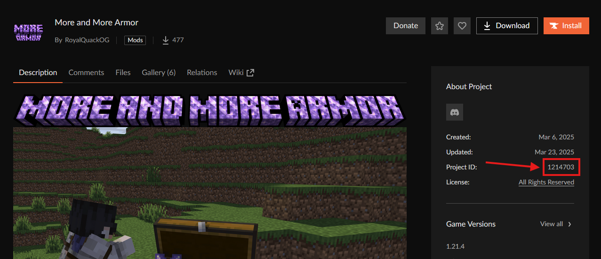

ModMonitor Wiki
Welcome to the ModMonitor documentation! Here you'll find everything you need to know about using ModMonitor to track and manage your Minecraft mod updates.
API support
ModMonitor is made for Mods and Modpacks but can send notifications for any project uploaded on Modrinth and Curseforge
Getting Started
To start using ModMonitor, invite the bot to your Discord server using the invite link on our homepage. Once the bot is in your server, you can use the following commands:
/monitorhere
Set up the current channel as a notification channel for mod updates. This is where ModMonitor will send notifications about mod updates.
/addproject
When adding a project you will be asked if you want to connect a modrinth or curseforge project.
When using modrinth(/addproject modrinth) add the slug of a project after "modrinth" the slug of a project is found at the end of the link https://modrinth.com/mod/sodium the slug in the case is sodium. /addproject modrinth sodium. The same applys for modpacks https://modrinth.com/modpack/aged, this makes"aged" is the slug.
When using curseforge(/addproject curseforge) add the project-id after "curseforge", the project-id is found in the "about project", with the id example usage is /addproject curseforge 1214703
/removeproject
When removing a project the same formatting as /addproject. Please refer to it
/addping
Add a role or user to be pinged when specific mod updates are available. This ensures important updates aren't missed.
/removeping
Remove a role or user from receiving ping notifications for mod updates.
/listprojects
View a list of all mods and modpacks currently being tracked in your server.